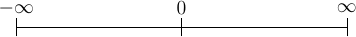
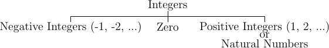

In this chapter we will study about number systems. We normally deal in decimal number system. First question which will come to your mind is what is a number system? Well, a number system is a system which determines the rules and symbols for numbers on how we are going to use them. The symbols for decimal number system are arabic but they were taken from India, presumably. A number system consists of symbols for representing numbers and a dot for representing fractional numbers. Minus sign is used to represent negative numbers. A number system ranges from \(-\infty\) to \(+\infty\). It is best represented by a straight line given below.

Number axis
As you see the stretch of number axis, it makes me wonder what is infinity. Infinity in itself is not a number to be honest in the sense that it is more of a concept. Infinity is such a large number that cannot be written or achieved by anything of physical world. Infinity is immeasurable. Each point on this axis represents a number. It may be integer or fractional number. I hope you know what is an integer. An integer is a whole number like -1, -2, 0, 5, 7 etc. Real numbers have fractional parts like 1.234. I cannot go much into these basics. The important fact to note is that between any two points there exists infinite numbers. In other words between any two numbers there exists infinite numbers. For example, between 1.2 and 1.3 there are 1.21, 1.22, 1.23..., 1.29. Moreover between 1.21 and 1.22 there are 1.211, 1.212, 1.213 and so on.
Now let us come back to number system discussion. It enables us to represent a point on this axis. The numbers I have written are supposedly in decimal number system. Base of decimal number system is 10. Why because it consists of 10 distinct symbols 0 through 9. Similarly we can have any other number system. Popular number systems in computers are binary, octal and hexadecimal not to mention decimal ofcourse.
1. Natural numbers Numbers 1, 2, 3 4, ... used in ordinary counting are called natural numbers or positive integers. The set of natural numbers is denoted by N.
Thus N = {1, 2, 3, 4, 5, ...}
2. Integers: The numbers ..., -3, -2, -1, 0, 1, 2, 3, ... are called integers. These are whole numbers i.e. not fractions. The set for integers is denoted by I or Z.
This I or Z = {..., -3, -2, -1, 0, 1, 2, 3, ...}
Clearly, \(N \subset Z\).
3. Zero: 0 is an integer but a special integer. It is neither negative not positive but 1’s complement in binary number system has two zero one positive and one negative while 2’s complement has only one zero. Zero is treated as a non-negative as well as non-positive integer.
Examples:

Integer Classification
4. Rational Numbers: is a number of form \(\frac{a}{b}\) where \(a\) and \(b\) are integers and \(b\ne 0\). The set of rational numbers is denoted by Q.
Thus Q= \(\{\frac{a}{b}: a,b\in Q \text{ and } b\ne 0\}\). Since \(b\) is an integer it can very well be 1 therefore each number of the form \(\frac{a}{1}\) which is nothing but \(a\) is also a rational number.
Clearly, \(N\subset Z\subset Q\). Examples of rational numbers are \(\frac{2}{3}, -\frac{3}{4}, 7\) etc. 0 is an inetger and hence a rational number.
5. Decimal form of a rational number is either recurring or terminating As we know that base of decimal number system is 10 which has two prime factors. Now if denominator of a rational number is not one and contains any other factor than 2 and 5 then the rational number will be recurring and if it is only product of powers of 2 and 5 or is 1 then the rational number will be terminating. This can be generalized for any base or radix \(r\) which has say prime factors \(r_1, r_2, ..., r_n\) then in that case if denominator contains any other factor than these then that rational number will be recurring else terminating.
For exmaple \(\frac{3}{4}=0.75\) while \(\frac{3}{7}=.4285714285714...\)
It is safe to assume that \(a\) and \(b\) do not have a common factor because that factor can be eliminated without changing the value of the rational number.
6. Standard form of a rational number: A rational number of the form \(\frac{a}{b}\) is said to be in standard form if \(a\) and \(b\) have no factor in common other than 1 and \(b>0\).
7. Irrational numbers: Consider a rational number \(\frac{a}{b}=\sqrt{2}\). By definition of rational numbers \(a\) and \(b\) cannot have a common factor. But then \(a,b\in Z\) which is not the case here as \(a \text{ or } b\) is not an integer. Therefore, it is not a rational number. The reason is if both of them are integers then the rational number cannot be square root of a number. Hence, we can conclude that this fraction \(\frac{a}{b}\) is an irrational numbers and there are infinite such irrational numbers.
8. Decimal form of an irational number is neither terminating nor recurring For example :math:sqrt{5}=1.732...
9. Real numbers: All rational and irrational numbers are also known as real numbers which is denoted by set R.
Clearly, \(N\subset Z\subset Q\subset R\)
As the name suggests binary number system has base of 2. Therefore it has only two symbols. 0 and 1. This is the most popular system for computers becasue TTL NAND and NOR gates which are the most basic logic gates using which other gates are implemented in processor has only two voltage output levels because of their operation in cut-off and saturation zones. These terms are better understood with the help of a book on electronics which is out of scope of this book. All binary numbers consist of 0 and 1. So the count is like 0, 1, 10, 11, 100, 101, 110, 111, 1000 and so on.
First 0 then 1 the what? Why 10? Because that is the next bigger number you can form using 0 and 1. Also, 10 when converted to decimal is 2. This represents base. 10 in any number system represents the base of that system. After conversion to decimal. Note you can read it ten but it is not really ten. There are no tens in binary. When you say ten by default we mean that of decimal system. A number has no meaning without its base. So you can better write it as \(10_2\). The subscript denotes the base.
Consider a decimal number. Let us say 53 then how would be convert it to binary. The technique is that of division. Please watch following carefully:
2 | 53 | 1
----------
2 | 26 | 0
----------
2 | 13 | 1
----------
2 | 6 | 0
----------
2 | 3 | 1
----------
2 | 1 |
So the binary is \(110101_2\). Please allow me to explain the process even though it is trivial and obvious. First we divide 53 by 2 and write the remainder. Then quotient is 26. We repeat the process for 26 therefore remainder is 0 and quotient is 13. This we go on repeatin till we have 1 as quotient. Note that all the remainders will be 0 or 1 because divisor is 2. Similarly, final quotient is always 1. Now we take final quotient and start writing remainders from top to bottom.
To convert binary to decimal let us examine following:
The power is to 2 because 2 is the base of source. It starts from 0 for unit’s position and increases to 1 and 2 for ten’s and hundred’s position and so on. 1’s and 0’s are the values of that place. If you note carefully powers of 2 grow like 1, 2, 4, 8, 16, 32, 64, 128 and so on. Any number can be written by using these powers at most one time. For example consider 100. I know it is less than 128 so I will use 64. Then 36 remains. So I will use 32 and then 4. This means \(100 = 64 + 32 + 4\) which means power 6, 5 and 2 have been used. Therefore, I can quickly write down number as \(1100100_2\).
Fractional numbers are slightly more complicated. Let us consider \(1.1_2\). In decimal it will be \(1 + \frac{1}{2}\). This is 1.5 in decimal. Note that when you convert a fractional part of binary to decimal denominator will always be power of 2. For that matter when you convert from any base to decimal denominator will be powers of that base. Important Therefore, when you convert from decimal to some base n then denominator of that decimal number can have only those prime factors which are available in the set of prime factors of n.
Operations such as addition, subtraction, multiplication and division are similar in all number systems.
Let us try to describe a number in a generic number system which is given below:
As you can see all the terms with \(c\) are called digits. The leftmost or leading digit is called most significant digit and the rightmost or trailing digit is called least significant digit. The . is called a point which separates the integral part which is toards its left from the fractional part which is towards its right. \(b\) is known as radix or base of the number system. Note that all digits will be between 0 to \(b-1\). So in our decimal system \(b\) is 10 therefore we have digits from 0 to 9. In binary number system it is 2 therefore digits permitted are 0 and 1.
These are the basics of number systems i.e. the numbers themselves. When we return back from our journey of Mathematics to Data structures and Algorithms I will discuss more on number theory and about Alan Turing and how the world’s shpae changed because of him and foundation of computer science was laid.